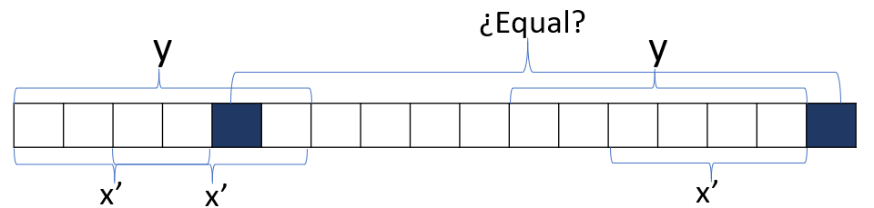

December 7, 2019
We have a string word with index from 0 to len, were len is the length of the string word. Lets denotate words as the prefix of word until the index s; i.e. the substring from 0 to s. And lets denote Xs the set of all non proper substring such that each substring is a prefix and a suffix of words. We want to know Xs for every s from 0 to len.
Lets supose that we have the string: ABABABA
Then word0= A. Because is the prefix until word[0]= A . So, X0 = {}, because the only substring that is a prefix and a suffix is A; but we ask for non proper substring and that is why A ∉ X0
word1= AB, the first two letters of the string. Then, X1 = {}, because we have the prefix A but that is not a suffix of AB. Adn because we don’t include proper substrings we have no more options, and X1 is empty.
word2= ABA. In here X2 = { A }. Because A is the prefix word0 and the suffix from word[2]= A to itself.
word3= ABAB. Here, X3 = { AB }. Because AB is the prefix word1 and the suffix from word[2]= A to word[3]= B. Lets note that A,ABA ∉ X3 because they aren’t suffix.
word4= ABABA, and X4 = { A, ABA }.
word5= ABABAB, and X5 = { AB, ABAB }.
word6= ABABABA, and X6 = { A, ABA, ABABA }.
The problem solves using dynamic programing. Lets denote for the moment DP[s] = Xs. With that DP[s] represents the set Xs. Let’s note that DP[0] = { } because there are non proper prefix or suffix.
Note thst for every element x ∈ Xs we have the following:
We have that x = wordj for some j ∈ [0, s − 1]. And lets denote x − 1 = wordj − 1, i.e. the string x minus the last character. Because x ∈ Xs it must happen that x − 1 ∈ Xs − 1. It looks like:
In here we note that every element x ∈ DP[s] we have that x − 1 ∈ DP[s − 1]. So one approach we could have until now for constructing DP[s], it’s to iterate over all the elements x ∈ DP[s − 1] and check if the last caracter of x + 1 (word[j + 1]) match with the caracter word[s].
Now lets change a bit how we store the DP set, instead of keeping the hole substrings we can store the indexes of the strings. Because we can deduce the substrings by taking the prefix with that index (words). So DP[i] = {s ∈ [0, i] : words ∈ Xi}. In this case DP[0] = { − 1} because the index − 1 represents the empty string.
Now let’s take the yi as the maximun s ∈ DP[i], i.e. yi = max(DP[i]). We see, that yi < = yi − 1 + 1, i.e. the maximun substring that is a prefix and a suffix of wordi could be the maximun of wordi + 1, the plus one is the caracter word[i], that’s because we see that each element in DP[i] is an element in DP[i − 1] plus 1.
Lets see what happen for an element x ∈ DP[i] so that x < yi − 1 + 1. So we have that:

But we have, that for x − 1, because the prefix is equal suffix with yi − 1. We have that, x − 1 is a suffix of wordyi − 1 :

And then we know if the last caracter plus one are equal of any x′ ∈ Xyi − 1 then x′ + 1 ∈ Xi

And then if x ∈ Xi then x − 1 ∈ Xi − 1. So to find the max of DP[i] we can check if word[i] = = word[yi − 1 + 1] then the maximun is yi − 1 + 1. If not, then the maximun must be in DP[yi − 1] we can take the maximun of that (yyi − 1) and do the same, if we can’t find some value for yi it means that for that prefix there are not a substring that satiffies what we request (Xi = { }). Another important thing to notice is that if x ∈ Xi and len(x) < yi then x ∈ Xyi or in terms of DP, is that if s ∈ DP[i] and s < yi then s ∈ DP[yi]. Because we have:

Since the prefix y equal to the suffix:

So it satisffacies what we said. So we can change DP so it only stores the maximun index such that the substring it’s a prefix and a suffix. And now DP[i] = max({s ∈ [0, i] : words ∈ Xi}). And if we want to know the other subtrings we can just go to DP[DP[i]] and so on.
So we have the code for an string of size n:
dp[0] = -1;
for (int i = 1; i < n; i++){
int j = dp[i-1]; // We are going to check first if the maximun substring that is a preffix and a suffix is the maximun of i - 1 plus the new character we are adding
while ( j >= 0 && word[j+1] != word[i]) // if j == -1 means that we coudn't find the substring, or if word[j+1] == word[i] means that the last character plus one of the maximun substring is equal to the last character of the preffix i, so this is the longest substring that is a prefix and a suffix of the i-th prefix.
j = dp[j]; //While niether of before happen, we move know to the preffix of the maximun substring, and repeat.
if(word[j+1] == word[i]) j++; //If we find a match of the last letter that means that the prefix j match with the suffix - 1, and the last letter match so the maximun substring its j+1;
dp[i] = j; //We store in DP the index of the maximun substring.
}We might thing this code could be O(n2), but in fact we can take out the line int j = dp[i-1] because in the last iteration we do dp[i] = j and we are doing then j = j which is redundant. So the code looks like:
dp[0] = -1;
int j = -1;
for (int i = 1; i < n; i++){
while ( j >= 0 && word[j+1] != word[i]) j = dp[j];
if(word[j+1] == word[i]) j++;
dp[i] = j;
}The key part is to observe that in each iteration the variable j must increase its value in 1, it can decrease whaetever, but it can only decrease what it already increase. So our algorithm becomes O(n)
And we can just print for every prefix, each set of strings.
for (int i = 0; i < n; i++){
cout << "For the prefix from [0," << i <<"] which is "<< word.substr(0, i+1) << " the non-proper prefix that are also suffixes are:\n";
j = dp[i]; // inticialize by the longest
while( j != -1){
cout << word.substr(0, j+1) << '\n';//We print the substring which must be a prefix.
j = dp[j]; //We move to the longest substring of the prefix with size of my actual longest substring, that is my kth longest substring
}
cout << "\n";
}